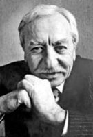

(1918 - 1994)

Romanlarıyla olduğu kadar tiyatro oyunlarıyla da Türk edebiyatının özgün adlarından biri olan Tarık Buğra, her yazdığında bireylerin birbirleriyle ve toplumla olan ilişkilerini irdeledi. Hem tarihsel romanlarıyla hem de bugünü anlatan romanlarıyla geleceğe ışık tutmaya çalıştı.
Tarık Buğra, 2 Eylül 1918 tarihinde Akşehir'de doğdu. İlk ve orta öğrenimini Akşehir'de tamamladı. Konya Lisesi'ni bitirdi (1936). Çeşitli zaman aralıklarıyla İstanbul Üniversitesi'nin Tıp, Hukuk ve Edebiyat fakültelerinde ikişer-üçer yıl okuyup vazgeçti.
Akşehir'de çıkardığı Nasrettin Hoca gazetesi ile gazeteciliğe başladı. İstanbul'a gelince Milliyet, Yeni İstanbul, Haber ve Tercüman gazetelerinde fıkralar yazdı, sanat sayfaları düzenledi. Haftalık Yol dergisini çıkardı.
Yazar, edebiyat dünyasına küçük hikayelerle girdi. Cumhuriyet gazetesinin açtığı bir yarışmada Oğlumuz adlı öyküsü ile ikinci olması onun için bir dönüm noktası oldu. Daha sonra Çınaraltı ve İstanbul dergilerinde öyküler yazmaya devam etti. (Bu öyküler kronolojik bir sıra ile incelendiğinde ilk dikkati çeken şey yazarın bir acemilik dönemi olmayışıdır. Hemen her yazarda izlenebilen zaman içinde ustalaşma Tarık Buğra'da görülmemektedir. O daha ilk öyküsünde usta bir yazar olduğunu ortaya koymuştur sanki.)
Öykülerinde daha çok yakın çevre, aile hayatı, sevda ilişkileri, küçük kasaba izlenimleri gibi bireysel ve dar çerçeveli konular göze çarpar. Tarık Buğra "olay" değil "atmosfer" öykücüsüdür. Öykülerinden, onun hüznü yakından tanıyan bir yazar olduğu anlaşılmaktadır. Öykü ve romanlarında çocukluğun, ilk aşkın, vefasızlıkların, kırılmışlıkların ve yarıda kalmış şeylerin hüznü vardır. Yayımlanmış dört tiyatro eserinden İbiş'in Rüyası'nda ünlü komedyen Naşit'in hayatından bir bölümü, son derece duygulu, iki kişi arasında geçen fırtınalı bir aşk atmosferi içinde anlattı. İlk adı Dört Yumruk olan, daha sonra Akümülatörlü Radyo adıyla yayınlanan ve Devlet Tiyatroları'nda sahnelenen eserinde ise yarıda kalmış mutlulukların öyküsünü anlattı. Ayakta Durmak İstiyorum ve Yüzlerce Çiçek Birden Açtı oyunları ise özgürlüğe ve bağımsızlığa hasret insanın dramını hikaye etmiştir.
1955'te yayınlanan Siyah Kehribar romanında, İtalya'da Mussolini devrinde geçen olayları anlattı, dikta rejimlerinin özgür ve zora gelmez mizaçlar üzerinde yarattığı olumsuz tesirleri betimledi. İbiş'in Rüyası adlı romanı, daha sonra oyun haline getirildi. Yalnızlar romanı ise, Akümülatörlü Radyo oyununun romanlaştırılmış halidir.
Roman dünyamızda Tarık Buğra'ya sağlam ve sarsılmaz bir yer sağlayan yapıtı, Küçük Ağa'dır. Bu romanda ve bunun devamı olan Küçük Ağa Ankara'da ve Firavun İmanı romanlarında, Kurtuluş Savaşı ilk defa değişik bir açıdan ele alınmıştır. Bu roman dizisi tarihsel açıdan "Milli Mücadele'de insanın ve milletin yeri nedir?" sorusunun cevaplarını araştırmıştır. Yazar, Yağmur Beklerken romanında ülkemizin Serbest Fırka denemesinin, Gençliğim Eyvah'ta ise 1970'li yıllarda Türkiye'nin bir numaralı sorunu haline gelen anarşi olaylarının değişik yönlerini ve perde arkasını betimlemiştir.
Tarık Buğra, Osmancık romanında da Osmanlı devletinin kuruluş yıllarını anlatmıştır. Bu eserde cihan devletini kuran irade, bilinç ve karakterin tahlili vardır. Tarık Buğra roman kahramanlarını idealize etmez. Onun romanlarındaki bütün karakterler doğaldır. İnsanı en gerçek ve inkar edilemez yanı (yani mizacı) ve en soylu duygusu (yani hüzünleri) açısından ele almıştır. Ona göre roman, hatta sanat "evreni ve insanları bir mizaca göre yeniden yaratmak"tır. Bu açıdan bakılınca Tarık Buğra, bir tahlil ustası olarak göze çarpar. Onun bazı romanlarında insan, bazılarındaysa konu ön plandadır fakat ikisi de her zaman dengelidir. Tarık Buğra roman ve tiyatro gibi kalıcı eserlerin ancak en mükemmel kültür Türkçesi ile yazılabileceğini savunmuştur. Her türlü basmakalıbı reddeden bağımsız bir sanat anlayışını benimsemiş olan Tarık Buğra; güzel Türkçesi, canlı ve yoğun üslubu, derin karakterleri ile Türk öykü, tiyatro ve roman yazarlarının en önemlileri arasında yer almıştır.
Hisar dergisi ve Türkiye gazetesinde de yazan Tarık Buğra 26 Şubat 1994 tarihinde İstanbul'da vefat etti.
Romanları: Siyah Kehribar (1955), Küçük Ağa (1964), Küçük Ağa Ankara'da (1966), İbişin Rüyası (1970), Firavun İmanı (1976), Gençliğim Eyvah (1979), Dönemeçte (1980), Yalnızlar (1981), Yağmur Beklerken (1981), Osmancık (1983)